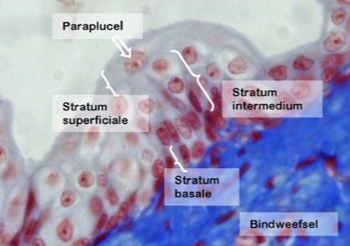

Overgangsepitheel:
Een speciaal type meerlagig epitheel is het overgangsepitheel (transitional epithelium). Ook dit epitheel heeft een stratum basale dat rust op de basaalmembraan. In ontspannen toestand bestaat het overgangsepitheel boven het stratum basale uit een tiental cellagen met kubische cellen van variabele vorm die allen contact maken met de basaalmembraan. Als de spanning op het epitheel verhoogt, wordt de epitheellaag uitgerekt, neemt het aantal cellagen af en zullen tegelijkertijd de cellen overgaan van een kubische naar een plaveisel-vorm. Deze laag heet het stratum intermedium. De meest oppervlakkige laag (stratum superficiale) bestaat doorgaans uit opvallende cellen die meerdere onderliggende cellen afdekken en dus zeker niet op de lamina basalis rusten, de zogenaamde paraplucellen.
Omdat overgangsepitheel uitsluitend de begrenzing vormt van de urineleider, de urineblaas en een groot deel van de urinebuis wordt het overgangsepitheel soms ook urotheel genoemd.

Overzicht van de verschillende cellagen van een overgangsepitheel.
Je ziet een stukje van de urineleider waaronder een blauwe bindweefsellaag te zien is.
Je ziet een stukje van de urineleider waaronder een blauwe bindweefsellaag te zien is.
Vordering zelfstudie bedekkende epithelen: